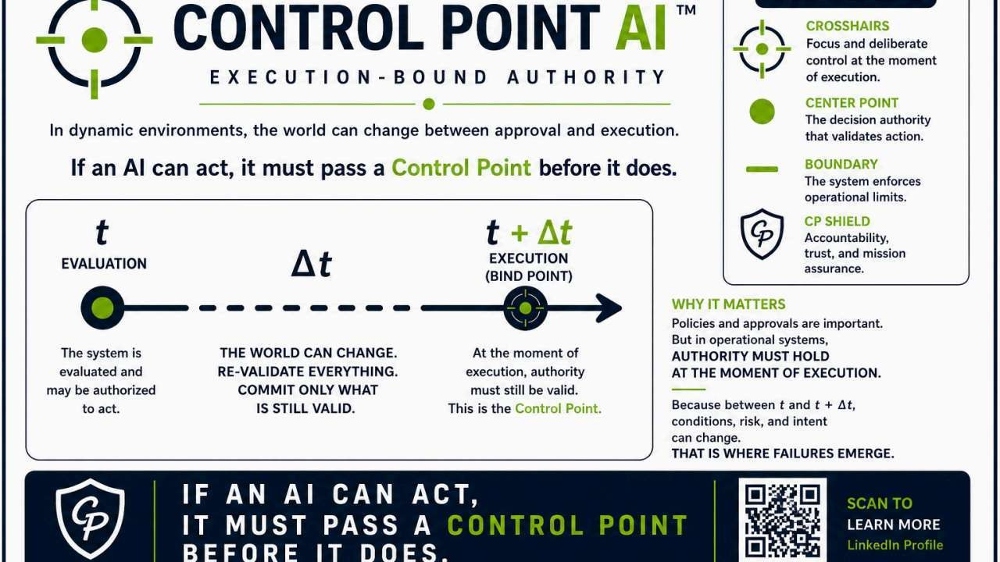
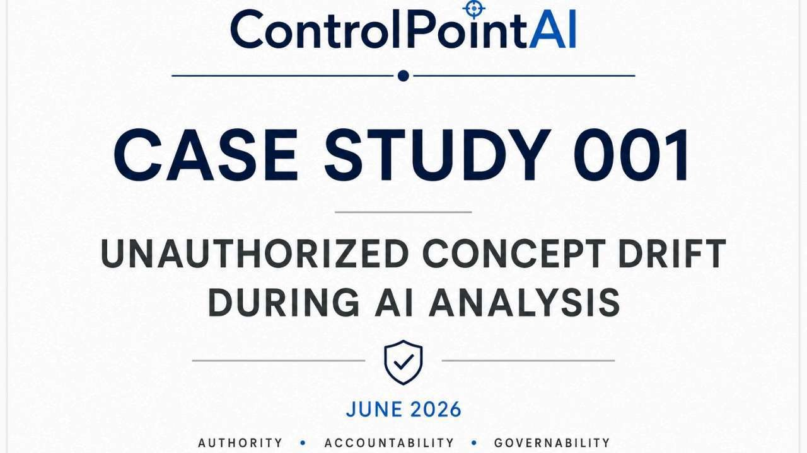

Operational Governance
Runtime Authority Enforcement in Naval Nuclear Maintenance
A naval availability scenario showing how AI assistance must remain bounded before it influences planning, material control, execution, testing, or final release.
- Runtime authority
- Dynamic re-authorization
- Final release gates
Read case study

Analytical Governance
Unauthorized Concept Drift During AI Analysis
An analytical case in which an unauthorized framework term was introduced, rejected, and later reintroduced without traceability to the approved baseline.
- Unapproved terminology
- Traceability failure
- Corrective action
Read case study
 Human-AI Interaction Governance
Human-AI Interaction Governance
Context Disruption Following User Interface Intervention
An observation report showing how a system-generated interface prompt disrupted conversational continuity and caused loss of shared attention.
- Shared attention
- Interface governance
- No model failure required
Read case study